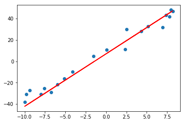
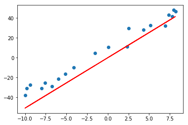

线性回归（ linear regression）
实践
1 | from keras.datasets import boston_housing |
单变量线性回归
1 | # 构造数据 |
(80,)
1 |
|
Epoch 1/20
80/80 [==============================] - 1s 7ms/step - loss: 445.8333 - mean_squared_error: 445.8333
Epoch 2/20
80/80 [==============================] - 0s 62us/step - loss: 106.7593 - mean_squared_error: 106.7593
Epoch 3/20
80/80 [==============================] - 0s 75us/step - loss: 101.9038 - mean_squared_error: 101.9038
Epoch 4/20
80/80 [==============================] - 0s 50us/step - loss: 87.0816 - mean_squared_error: 87.0816
Epoch 5/20
80/80 [==============================] - 0s 62us/step - loss: 79.4708 - mean_squared_error: 79.4708
Epoch 6/20
80/80 [==============================] - 0s 75us/step - loss: 73.3892 - mean_squared_error: 73.3892
Epoch 7/20
80/80 [==============================] - 0s 75us/step - loss: 69.0963 - mean_squared_error: 69.0963
Epoch 8/20
80/80 [==============================] - 0s 75us/step - loss: 63.2161 - mean_squared_error: 63.2161
Epoch 9/20
80/80 [==============================] - 0s 75us/step - loss: 57.7747 - mean_squared_error: 57.7747
Epoch 10/20
80/80 [==============================] - 0s 62us/step - loss: 58.5160 - mean_squared_error: 58.5160
Epoch 11/20
80/80 [==============================] - 0s 75us/step - loss: 51.4959 - mean_squared_error: 51.4959
Epoch 12/20
80/80 [==============================] - 0s 87us/step - loss: 48.4446 - mean_squared_error: 48.4446
Epoch 13/20
80/80 [==============================] - 0s 63us/step - loss: 44.3928 - mean_squared_error: 44.3928
Epoch 14/20
80/80 [==============================] - 0s 75us/step - loss: 42.2440 - mean_squared_error: 42.2440
Epoch 15/20
80/80 [==============================] - 0s 62us/step - loss: 44.3671 - mean_squared_error: 44.3671
Epoch 16/20
80/80 [==============================] - 0s 62us/step - loss: 37.3622 - mean_squared_error: 37.3622
Epoch 17/20
80/80 [==============================] - 0s 63us/step - loss: 35.7097 - mean_squared_error: 35.7097
Epoch 18/20
80/80 [==============================] - 0s 62us/step - loss: 35.6138 - mean_squared_error: 35.6138
Epoch 19/20
80/80 [==============================] - 0s 50us/step - loss: 32.7642 - mean_squared_error: 32.7642
Epoch 20/20
80/80 [==============================] - 0s 75us/step - loss: 32.6136 - mean_squared_error: 32.6136
20/20 [==============================] - 0s 11ms/step

1 | # 正规方程求解(没有添加偏置) |

多变量线性回归
1 | # Boston房屋价格回归数据集 |
Epoch 1/20
404/404 [==============================] - 1s 1ms/step - loss: 13144.4827 - mean_squared_error: 13144.4827
Epoch 2/20
404/404 [==============================] - 0s 42us/step - loss: 3041.2153 - mean_squared_error: 3041.2153
Epoch 3/20
404/404 [==============================] - 0s 42us/step - loss: 668.1933 - mean_squared_error: 668.1933
Epoch 4/20
404/404 [==============================] - 0s 45us/step - loss: 255.8141 - mean_squared_error: 255.8141
Epoch 5/20
404/404 [==============================] - 0s 49us/step - loss: 185.1011 - mean_squared_error: 185.1011
Epoch 6/20
404/404 [==============================] - 0s 49us/step - loss: 170.2183 - mean_squared_error: 170.2183
Epoch 7/20
404/404 [==============================] - 0s 45us/step - loss: 165.1749 - mean_squared_error: 165.1749
Epoch 8/20
404/404 [==============================] - 0s 45us/step - loss: 161.2603 - mean_squared_error: 161.2603
Epoch 9/20
404/404 [==============================] - 0s 45us/step - loss: 151.0976 - mean_squared_error: 151.0976
Epoch 10/20
404/404 [==============================] - 0s 45us/step - loss: 147.1785 - mean_squared_error: 147.1785
Epoch 11/20
404/404 [==============================] - 0s 47us/step - loss: 140.4976 - mean_squared_error: 140.4976
Epoch 12/20
404/404 [==============================] - 0s 49us/step - loss: 140.6603 - mean_squared_error: 140.6603
Epoch 13/20
404/404 [==============================] - 0s 47us/step - loss: 132.6787 - mean_squared_error: 132.6787
Epoch 14/20
404/404 [==============================] - 0s 42us/step - loss: 128.5385 - mean_squared_error: 128.5385
Epoch 15/20
404/404 [==============================] - 0s 45us/step - loss: 123.0882 - mean_squared_error: 123.0882
Epoch 16/20
404/404 [==============================] - 0s 42us/step - loss: 118.4096 - mean_squared_error: 118.4096
Epoch 17/20
404/404 [==============================] - 0s 39us/step - loss: 123.5432 - mean_squared_error: 123.5432
Epoch 18/20
404/404 [==============================] - 0s 42us/step - loss: 115.5308 - mean_squared_error: 115.5308
Epoch 19/20
404/404 [==============================] - 0s 42us/step - loss: 112.0784 - mean_squared_error: 112.0784
Epoch 20/20
404/404 [==============================] - 0s 45us/step - loss: 114.4626 - mean_squared_error: 114.4626
102/102 [==============================] - 0s 2ms/step